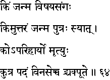
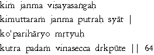

|

|
Verse 64 - Meaning:
Q:What (kim) is the cause of birth (janma) ?
A:Attachment (samgah) to objects (vishaya) of enjoyment.
Q:What (kim) is one's second (uttaram) embodiment (janma) ?
A:It is one's son. (putrah-syaat) .
Q:What (ko) is un-avoidable (a-parihaaryo) ?
A:Death. (mrtyuh) .
Q:Where should (kutra padam) one take one's place (vinyasec-ca) ?
A:In a place which one can see directly (drk) as pure. (puute) .
|